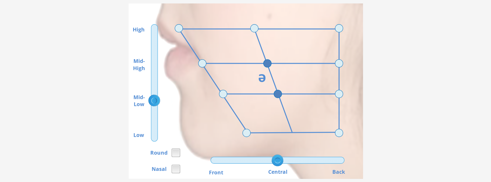

Interactive prototype
French vowel articulation explorer
Making an abstract phonetics system visible, audible, and explorable.

The experience
Learners manipulate sliders and select positions to hear sixteen French vowels and see their corresponding International Phonetic Alphabet symbols.
The idea
Interaction helps learners form a mental model that static charts and written descriptions often struggle to convey.